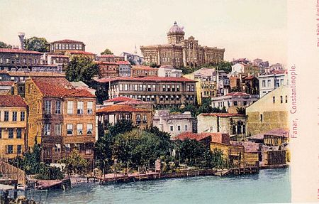
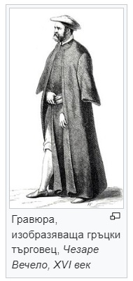

Този Уебсайт е изготвен от Кристиян Стойков
Фанариотите 17 - 19в

Изглед от Фенер, около 1900 г.
Фанариоти на български е дума с две значения: (1) знатни гръкоезични християни в османската столица и (2)
служители на гръцката Цариградска патриаршия, особено по време на църковно-народната борба.
Името
произлиза от това на цариградския квартал Фенер (на гръцки „Фанари“), където след 1601 г. се намира
седалището на Вселенските патриарси и където живеят повечето богати православни християни в града.
Произход

През XVII век няколко цариградски християнски семейства забогатяват от придворни доставки, откупуване на
данъци и лихварство. Те получават достъп до султанския двор като лекари или преводачи и
печелят
влияние
(най-вече чрез отпусканите от тях заеми) в избора на патриарх и митрополити. Макар че се обявяват за
потомци на старинни византийски родове,
такива фамилии без изключение са пришелци в столицата. Някои
са
от гръцки, други – от албански, български, румънски или италиански
Slide 3

Тази мнима аристокрация добива монопол върху длъжностите велик драгоман (главен преводач при Високата
порта) и драгоман (преводач) на флота. Като такива те водят от името на османското правителство
преговори с европейските държави.

This is the third slide. You can add different content for each slide.